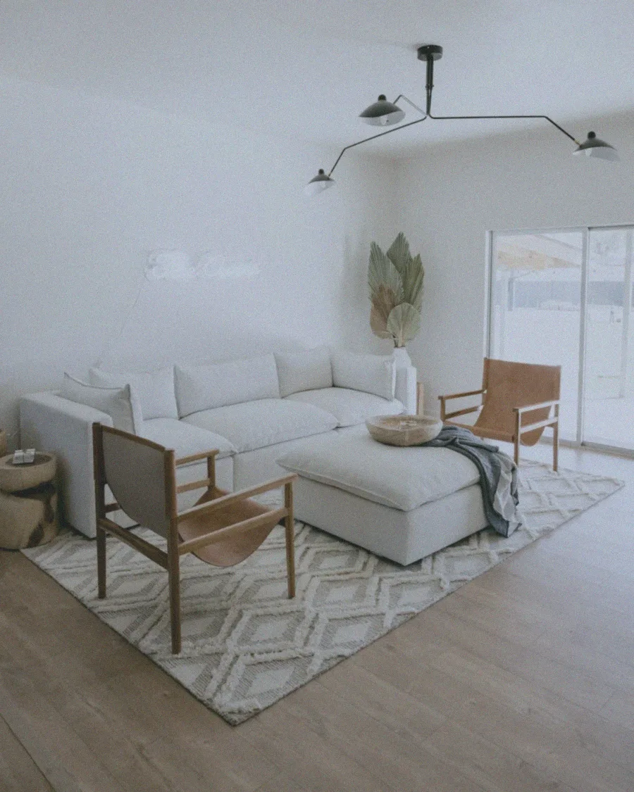
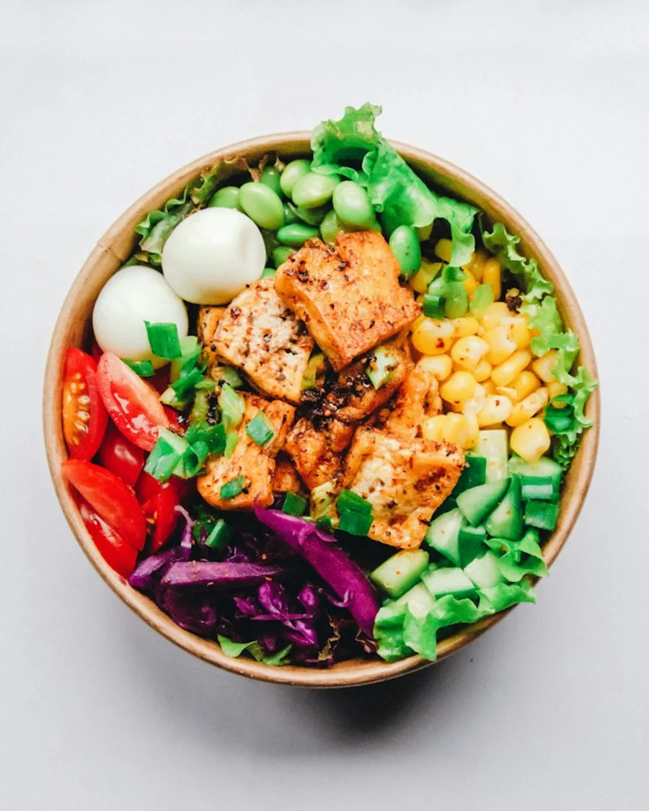
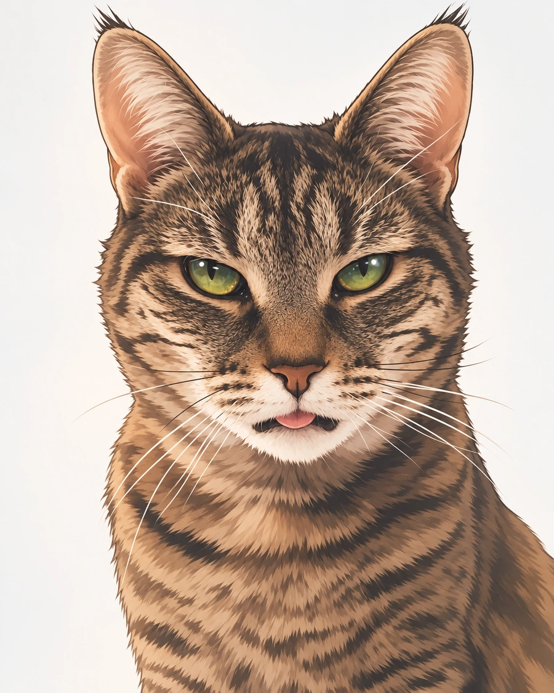
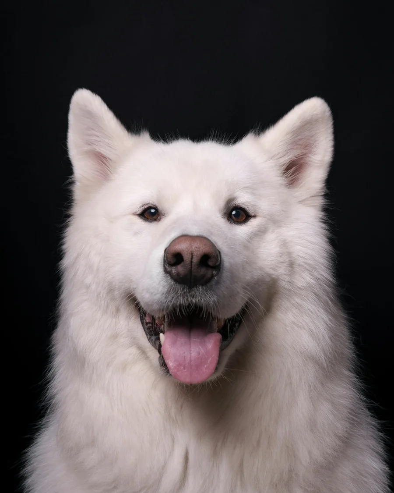

In progress
Usually 20–40 seconds each-
 Pure White
Generating
Pure White
Generating
-

Bright Listing Generating
You can close the app. Finished photos land here.
Done
Newest first
PrivateDelivery MenuToday · Banner 16:9 · HD PrivateSpa PodiumToday · Post 4:5 · Standard
PrivateSpa PodiumToday · Post 4:5 · Standard
Public · watermarkKorean ManhwaYesterday · Original · Standard
Public · watermarkPet StudioYesterday · Story 9:16 · Standard
Photos made with free credits are public with a watermark. Photos made with paid credits are private and watermark-free. Images are illustrative examples.